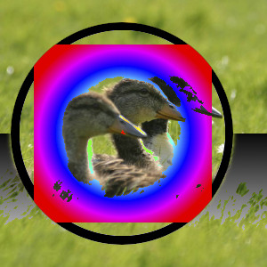
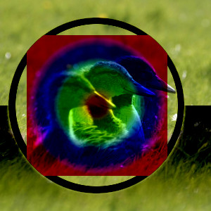

The “Darken” group contains layer modes that make the result darker.
- Darken only
-
Figure 8.19. Example for layer mode “Darken only”

Top layer at 100% opacity using “Darken only” mode.
mode compares each component of each pixel in the upper layer with the corresponding one in the lower layer and uses the smaller value in the resulting image. Completely white layers have no effect on the final image and completely black layers result in a black image.
The mode is commutative; the order of the two layers doesn't matter.
- Luma/Luminance darken only
-
Figure 8.20. Example for layer mode “Luma/luminance darken only”

Top layer at 100% opacity using “Luma/Luminance Darken only” mode.
mode compares the luminance of each pixel in the upper layer with the corresponding one in the lower layer and uses the smaller value in the resulting image. Completely white layers have no effect on the final image and completely black layers result in a black image. Luma is the perceptual version of Luminance.
The mode is commutative; the order of the two layers doesn't matter (except for transparent areas in the bottom layer).
- Multiply
-
Multiply mode multiplies the pixel values of the upper layer with those of the layer below it. The result is usually a darker image. If either layer is white, the resulting image is the same as the other layer. If either layer is black, the resulting image is completely black.
The mode is commutative; the order of the two layers doesn't matter (except for transparent areas in the bottom layer).
- Burn
-
Burn mode inverts the pixel value of the lower layer, divides that by the pixel value of the upper layer, then inverts the result. It tends to make the image darker, somewhat similar to “Multiply” mode.
In photography, burning is a technique used in a darkroom to increase the exposure in particular areas of the image. This brings out details in the highlights. When used for this purpose, burn may work best on Grayscale images and with a painting tool, rather than as a layer mode.
- Linear burn
-
Figure 8.23. Example for layer mode “Linear burn”

Top layer at 100% opacity using “Linear Burn” mode.
Linear Burn mode adds the pixel values of the upper and lower layers, and then subtracts 1.0. It tends to make the image darker, somewhat similar to “Multiply” mode.